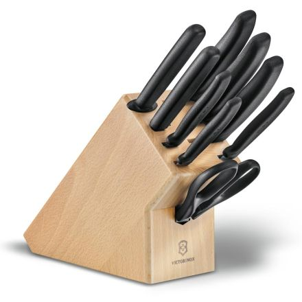

Cuchillería
Cuchillo de Chef Victorinox Fibrox 20 cm
El favorito de cocineros profesionales y aficionados. Hoja de acero inoxidable de alto carbono, mango ergonómico antideslizante y un filo que mantiene su precisión con poco afilado. Ideal para cortar, picar y filetear con total control.
Ver producto